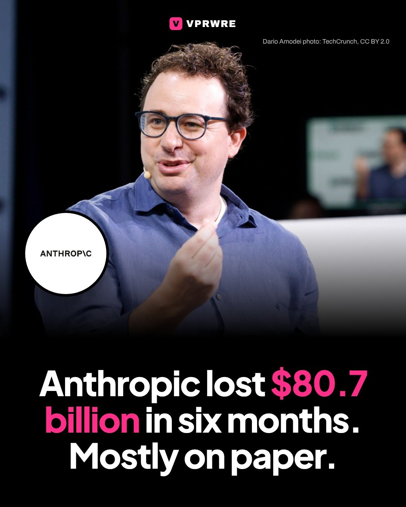
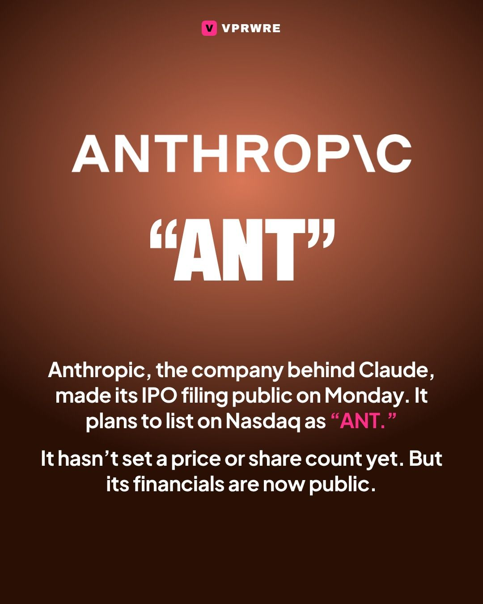
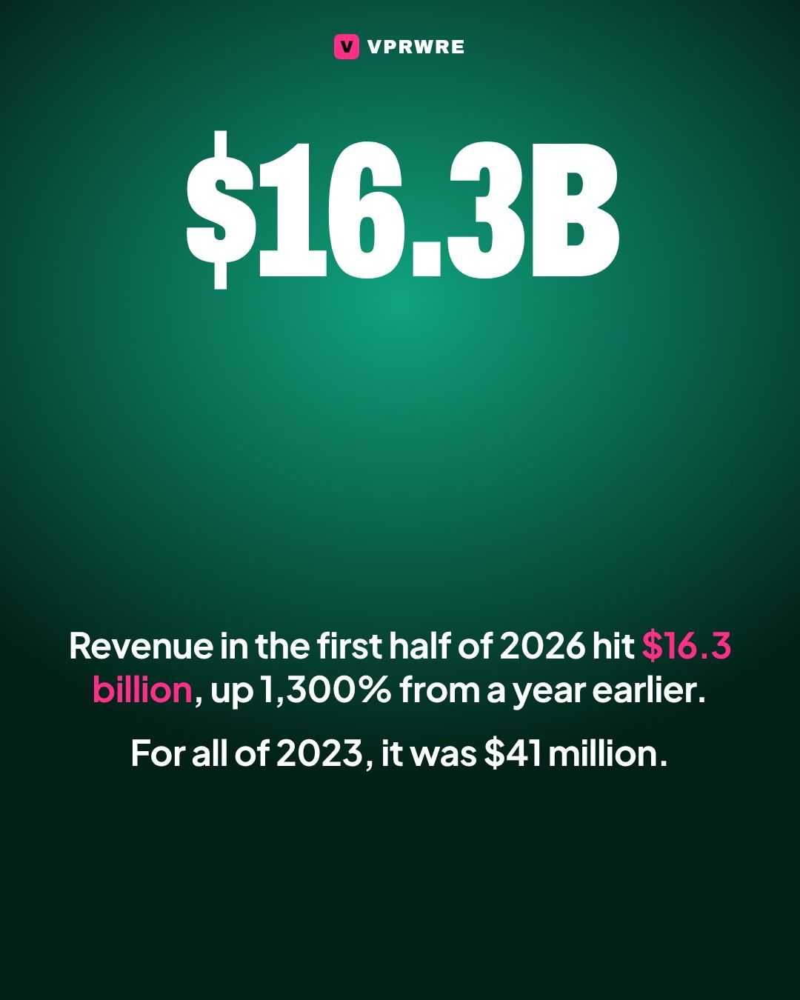
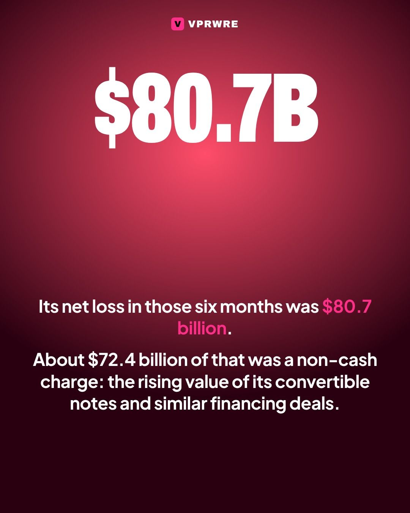
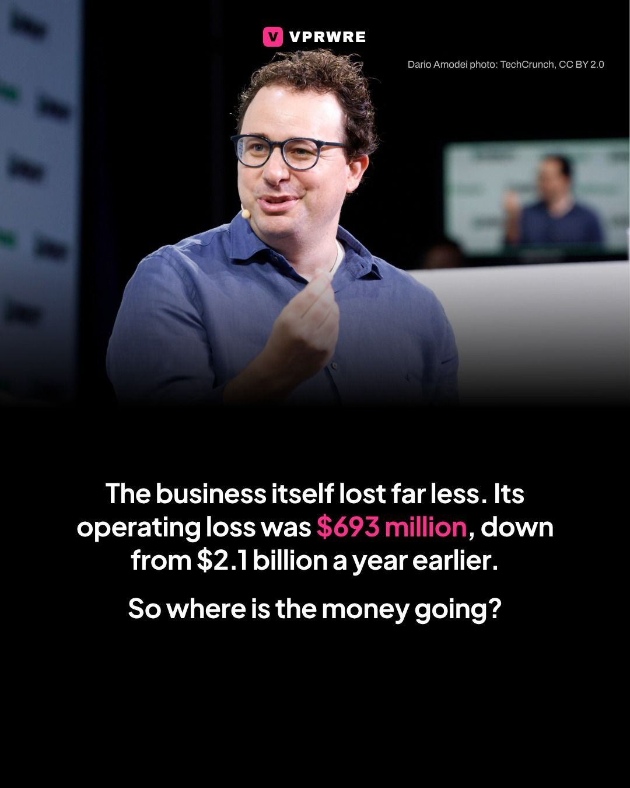
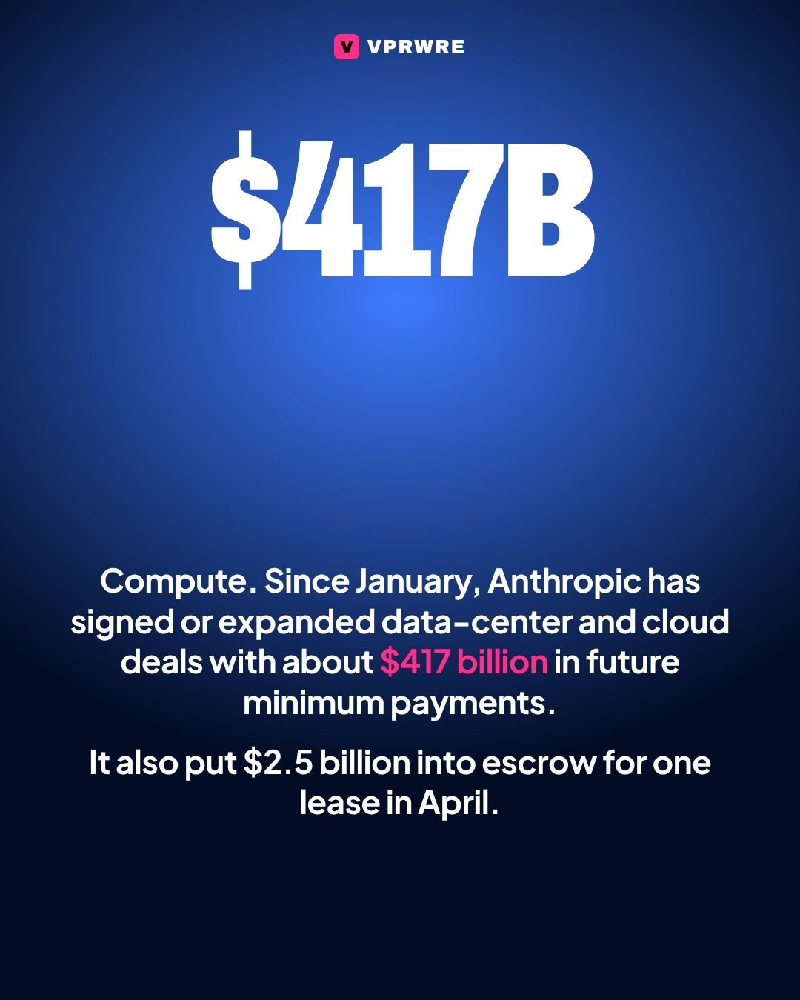
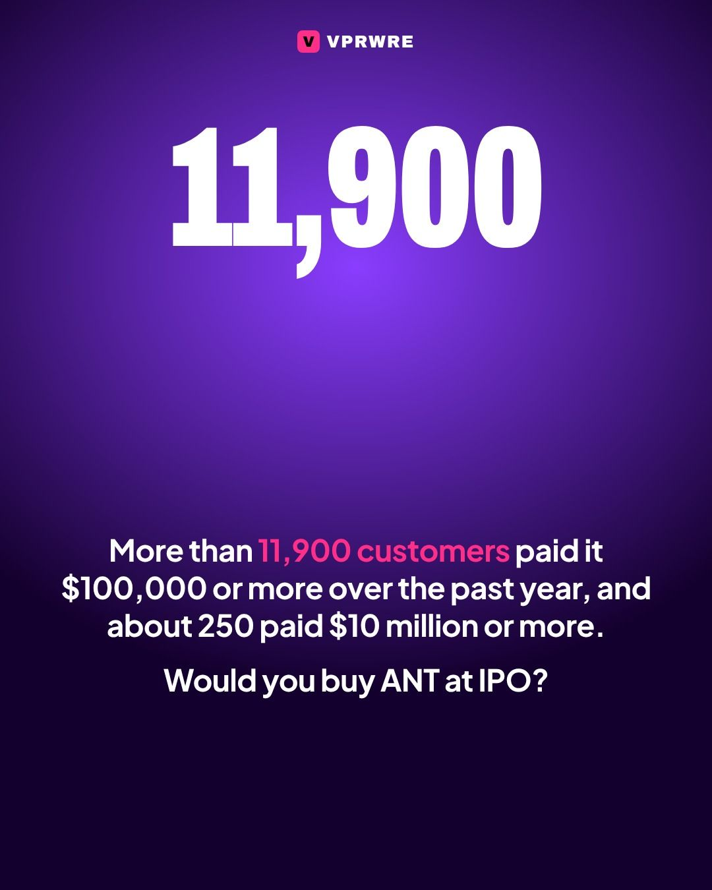

The AI race
Anthropic lost $80.7 billion in six months. Mostly on paper.
Anthropic lost $80.7 billion in six months. Mostly on paper.

Anthropic, the company behind Claude, made its IPO filing public on Monday. It plans to list its Class A shares on the Nasdaq under the ticker “ANT.” It hasn’t set a price or a share count yet.
The growth is wild. Revenue was $41 million in 2023, $386 million in 2024 and $4.6 billion in 2025. In the first half of 2026 alone it hit $16.3 billion, up 1,300% from a year earlier.
Then there’s the $80.7 billion net loss for those six months. About $72.4 billion of it is a non-cash charge from the rising value of its convertible notes and similar financing deals. The operating loss was $693 million, down from $2.1 billion a year earlier.
Where the money goes: compute. Since January, Anthropic has signed or expanded data-center and cloud deals with about $417 billion in future minimum payments, and it put $2.5 billion into escrow for one lease in April.
More than 11,900 customers paid it $100,000 or more over the past year, and about 250 paid $10 million or more.
Would you buy ANT at IPO? Tell us below.
Photo: Dario Amodei, TechCrunch, CC BY 2.0
The carousel
8 slides · Open on Instagram







Disclosure: VPRWRE drafts with Claude, Anthropic’s AI.